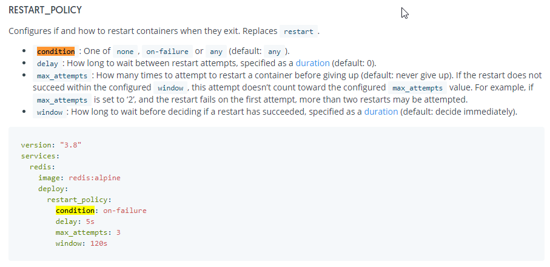
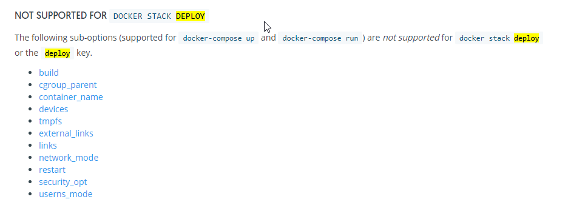

Nodejs Container Restart Policy
September 21, 2020 - 2 mins read time - 360 words - garrardkitchen
If by accident to deploy a solution using the Node.js Cluster API and do not fork exited processes then the following docker-compose restart_policy will not help you:
deploy:
restart_policy:
condition: on-failure
If you’re using the Cluster API to schedule tasks across your processes, and all forked processes die, then the docker engine will just assume you’ve gracefully shutdown.
Take this code for example, you will see that it doesn’t fork another process and therefore, at some point it will no longer process any anything:
import { Injectable } from '@nestjs/common';
import * as cluster from 'cluster';
import * as os from 'os'
@Injectable()
export class ClusterService {
static clusterize(numCPUs: number, callback: () => void): void {
if (cluster.isMaster ) {
const procs = (numCPUs > os.cpus().length) ? os.cpus().length : numCPUs
console.log(`GOING TO USE ${procs} PROCESSES`)
console.log(`MASTER SERVER (${process.pid}) IS RUNNING `);
console.log(`MASTER SERVER (${process.pid}) IS RUNNING `);
console.log(`SCHED_NONE: ${cluster.SCHED_NONE}`)
console.log(`SCHED_RR: ${cluster.SCHED_RR}`)
console.log(`CLUSTER SCHEDULING POLICY: ${cluster.schedulingPolicy}`)
for (let i = 0; i < procs; i++) {
const worker = cluster.fork();
console.log(`CREATING PROCESS ${worker.process.pid}`);
}
cluster.on('exit', (worker, code, signal) => {
console.log(`worker ${worker.process.pid} died ${signal || code}`);
});
cluster.on('disconnect', (worker) => {
console.log(`worker ${worker.process.pid} disconnected`);
})
} else {
callback()
}
}
}
To mitigate this, you simply fork another process within the exit event handler like this:
cluster.on('exit', (worker, code, signal) => {
console.log(`worker ${worker.process.pid} died ${signal || code}, restarting...`);
const newWorker = cluster.fork();
console.log(`CREATING PROCESS ${newWorker.process.pid}`);
});
To avoid the container not restarting due to lack of process availability to deal with demand in the above scenario, you can’t use the on-failure condition in the restart_policy. You must use the ‘any’ condition. This section incidentally replaces the old restart sub-option.

deploy:
replicas: 1
resources:
limits:
cpus: "2"
memory: 512M
update_config:
order: start-first
parallelism: 1
restart_policy:
condition: any
delay: 5s
window: 120s
placement:
constraints:
- node.role == worker
Caution: You can’t use max_attempts: 3 in combination with condition: any
Additionally, I found one further interesting facts when looking into this issue.
If you’re using Docker Stack Deploy (think stack in Portainer) using a docker-compose file to deploy to your swarm and you’re using restart: always, then beware, the restart is not supported.

ref: 👆 compose-file